2.第 二 例
现在假定有年产品9000，这个年产品完全是处在产业资本家阶级手中的商品资本，其中可变资本和不变资本的一般平均比例是1∶5。这种情况的前提是：资本主义生产已经有了显著的发展；与此相应，社会劳动的生产力也已经有了显著的发展；生产规模在此以前已经有了显著的扩大；最后，在工人阶级中造成相对人口过剩的所有条件也已经有了发展。这时，把分数去掉，年产品就会划分如下：
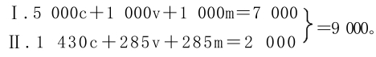
现在假定，第Ⅰ部类的资本家阶级只消费剩余价值的一半＝500，而把其余一半积累起来。这样，（1000v＋500m）I＝1500要转化为1500Ⅱc。但是因为在这里Ⅱc只＝1430，所以要从剩余价值那里补进70。285Ⅱm减去这个数额，还留下215Ⅱm。于是我们得出：
Ⅰ.5000c＋500m（待资本化的剩余价值）＋资本家和工人的消费基金1500（v＋m）。
Ⅱ.1430c＋70m（待资本化的剩余价值）＋285v＋215m。
因为在这里70Ⅱm直接并入Ⅱc，所以，为了推动这个追加的不变资本，就要有一个可变资本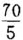＝14。这14也要从215Ⅱm中扣除；剩下的是201Ⅱm，因此我们得出：
Ⅱ.（1430c＋70c）＋（285v＋14v）＋201m。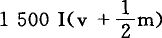和1500Ⅱc的交换，是简单再生产的过程，关于这一点已经讲过了。不过，在这里还必须指出某些特征，这些特征所以会发生，是由于在有积累的再生产中，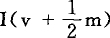不是单单由Ⅱc来补偿，而是由Ⅱc加Ⅱm的一部分来补偿。
不言而喻，既然把积累作为前提，Ⅰ（v＋m）就大于Ⅱc，而不像简单再生产那样，和Ⅱc相等；因为1.第Ⅰ部类已经把它的一部分剩余产品并入自己的生产资本，并把其中的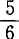转化为不变资本，所以，它不能同时又用第Ⅱ部类的消费资料来补偿这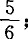2.第Ⅰ部类要用它的剩余产品，为第Ⅱ部类进行积累时所必需的不变资本提供材料，就像第Ⅱ部类必须为第Ⅰ部类的可变资本提供材料完全一样，这个可变资本应当推动第Ⅰ部类的剩余产品中由第Ⅰ部类自己用作追加不变资本的部分。我们知道，实际的可变资本是由劳动力构成的，因此，追加的可变资本也是由劳动力构成的。第Ⅰ部类的资本家不必为了他们将要使用的追加劳动力，向第Ⅱ部类购买必要生活资料，把它们储备起来，或积累这种必要生活资料，而奴隶主却不得不这样做。工人自己会和第Ⅱ部类进行交易。但是，不妨说，从资本家的观点看来，追加劳动力的消费资料只是生产和维持他们势必要有的追加劳动力的手段，因而是他们的可变资本的实物形式。他们（这里指第Ⅰ部类资本家）自己的直接活动，只是贮存为购买追加劳动力所必需的新的货币资本。一旦他们把这个劳动力并入他们的资本，货币对于这种劳动力来说，就成为第Ⅱ部类商品的购买手段，因此必须找到劳动力的消费资料。
附带说一下，资本家先生和他们的报刊，对劳动力花费自己的货币的方式，对劳动力借以实现这种货币的第Ⅱ部类商品，总是感到不满意。于是，他们来推敲哲理、谈论文化和侈谈博爱，例如，英国驻华盛顿大使馆秘书德拉蒙德先生就是这样做的。据他说，《民族》〔一种刊物〕在1879年10月底发表了一篇很有意思的文章，其中写道：
“工人在文化方面跟不上发明的进步。许多物品他们已经买得起，可是他们不知道怎样使用它们，所以他们没有为这些物品创造任何市场。〔每个资本家当然都愿意工人购买他的商品。〕没有任何理由说明，为什么工人不应该像那些赚钱同他一样多的牧师、律师和医师一样，希望得到同样多的舒适品。〔这种律师、牧师和医师确实可以按照自己的愿望得到许多舒适品！〕可是工人不这样做。问题始终在于，怎样用合理的、有益健康的方法来提高他们作为消费者的地位。这不是容易的问题，因为他的全部奢望没有超出缩短劳动时间的范围。蛊惑者总是煽动他去争取这种事情，而不诱导他借助自己智力和德性的完善来提高自己的地位。”（《女王陛下驻外使馆秘书关于驻在国的工商业等情况的报告》1879年伦敦版第404页）
延长劳动时间，好像就是使工人借助自己智力和德性的完善来提高自己的地位并成为一个合理消费者的那种合理的、有益健康的方法的秘密。为了要成为资本家商品的一个合理的消费者，工人首先——但是蛊惑者阻止他这样做！——就要让他的资本家用不合理的、有损健康的方法消费他的劳动力。不过，资本家又是怎样理解合理的消费呢？这表现在他不惜降低身价，在消费品贸易上直接和他的工人打交道，实行“实物工资制”，而且在各式各样的实物工资中还包括供给工人住房。这样一来，资本家同时又是工人的房主了。
正是这位热中于通过种种资本主义尝试来提高工人阶级地位的心地善良的德拉蒙德，在同一个报告中还谈到洛厄尔—劳伦斯公司的模范棉纺织厂。工厂女工的供膳宿舍和宿舍，属于拥有工厂的股份公司所有；这些宿舍的女管理员是为该股份公司服务的。股份公司制定了女工管理规则，任何女工均须在晚上10点以前回宿舍。但是这个制度的精华是：公司所设的特别警察在附近巡逻，以防有人违反宿舍规则。晚上10点以后，任何女工都不准出入宿舍。任何女工都不准在股份公司所属地区以外的地方住宿。地区内的每一所房屋，每周给公司带来10美元左右的租金。现在，我们就来看一看这种合理消费者是何等幸福：
“在许多设备最好的女工宿舍里，都备有钢琴。在织机上连续劳动10小时的女工，与其说需要真正的休息，不如说需要调剂单调的生活，因此，至少在她们中间，音乐、唱歌和舞蹈起着重要的作用。”（第412页）
但是，使工人成为一个合理消费者的主要秘密，还在下面这一点。德拉蒙德先生曾经访问过特纳·福尔斯（康涅狄格河畔）的制刀工厂。股份公司的主任会计欧克曼先生告诉他，美国的餐刀制品已在质量上胜过英国制品，接着又告诉他：
“在价格上，我们也要胜过英国；现在我们已经在质量上领先了，这是公认的；但是我们必须有较低的价格；只要我们的钢的价格便宜了，我们的劳动也便宜了，我们就会有较低的价格！”（第427页）
降低工资和延长劳动时间，这就是提高工人地位，使他成为合理的消费者的那种合理的、有益健康的方法的实质，只有这样，工人才可以为一批由于文化和发明的进步而使他买得起的物品创造一个市场。
因此，就像第Ⅰ部类必须用它的剩余产品为第Ⅱ部类提供追加的不变资本一样，第Ⅱ部类也要同样为第Ⅰ部类提供追加的可变资本。就可变资本来说，当第Ⅱ部类以必要消费资料的形式再生产它的总产品的更大部分，特别是它的剩余产品的更大部分时，它就既为第Ⅰ部类又为它自己进行积累了。
在以资本的增加为基础的生产中，Ⅰ（v＋m）必须＝Ⅱc加上再并入资本的那部分剩余产品，加上第Ⅱ部类扩大生产所必需的不变资本的追加部分；而第Ⅱ部类扩大生产的最低限度，就是第Ⅰ部类本身进行实际积累，即实际扩大生产所不可缺少的最低限度。
我们回过来讲刚才考察的情况，这种情况有这样一个特点：Ⅱc小于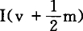，即小于第Ⅰ部类产品中作为收入用于消费资料的部分，因此，在和1500Ⅰ（v＋m）交换时，第Ⅱ部类的一部分剩余产品＝70，会立即由此实现。至于1430Ⅱc，在其他条件不变的情况下，它总是要由同等价值额的Ⅰ（v＋m）来补偿，这样，第Ⅱ部类的简单再生产才有可能进行，关于这一点，我们在这里不需要进一步考察。但是补充的70Ⅱm就不是这样。那种对第Ⅰ部类来说仅仅是以消费资料补偿收入，仅仅是为消费而进行商品交换的事情，对第Ⅱ部类来说，就不像在简单再生产中那样，仅仅是它的不变资本由商品资本形式再转化为它的实物形式，而是直接的积累过程，是它的一部分剩余产品由消费资料的形式转化为不变资本的形式。如果第Ⅰ部类用70镑货币（为了剩余价值的转化而保留的货币准备金）来购买70Ⅱm，如果第Ⅱ部类不用这个货币购买70Ⅰm，而把这70镑作为货币资本积累起来，那么，这70镑虽然不是再进入生产的产品的表现，但总是追加产品的表现（正是第Ⅱ部类的剩余产品的表现，追加产品是这个剩余产品的一部分）。但是，这样一来，第Ⅱ部类方面的这种货币积累，同时就是生产资料形式的卖不出去的70Ⅰm的表现了。因此，第Ⅰ部类会发生相对的生产过剩，这是同第Ⅱ部类方面的再生产不同时扩大相适应的。
但是，我们把上面这点撇开不说。在从第Ⅰ部类出来的货币70，还没有通过第Ⅱ部类方面购买70Ⅰm，而回到或者只是部分地回到第Ⅰ部类的期间，货币70会在第Ⅱ部类全部地或者部分地充当追加的潜在货币资本。在第Ⅰ部类和第Ⅱ部类之间商品的互相补偿使货币再流回到它的起点以前，这对双方的任何交换来说，都是适用的。但是，在事情正常进行的情况下，货币在这里所起的这种作用只是暂时的。在一切暂时游离的追加货币都立即能动地作为追加货币资本执行职能的信用制度下，这种仅仅暂时游离的货币资本可以被束缚起来，例如，可以用在第Ⅰ部类的新的企业上，而它本来应该实现停滞在第Ⅰ部类的其他企业中的追加产品。其次，应该指出：70Ⅰm并入第Ⅱ部类的不变资本，同时要求第Ⅱ部类的可变资本增加14。这种增加——像第Ⅰ部类剩余产品Ⅰm直接并入资本Ⅰc一样——是以第Ⅱ部类的再生产已经具有进一步资本化的趋势为前提的，也就是说，是以第Ⅱ部类再生产包含着由必要生活资料构成的那部分剩余产品的增加为前提的。
我们说过，在第二例中，如果500Ⅰm要资本化，9000产品为了再生产的目的，必须按照下面的方法来划分。我们在这里只考察商品，而把货币流通撇开不管。
Ⅰ.5000c＋500m（待资本化的剩余价值）＋1500（v＋m）消费基金＝7000商品。
Ⅱ.1500c＋299v＋201m＝2000商品。总额为9000商品产品。
资本化的过程如下：
第Ⅰ部类中要资本化的500m，分成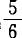＝417c＋＝83v。这个83v会从Ⅱm中取出一个同等数额，用来购买不变资本的要素，并且加到Ⅱc中去。Ⅱc增加83，就要求Ⅱv也增加83的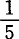＝17。因此，在交换之后我们得出：
Ⅰ.（5000c＋417m）c＋（1000v＋83m）v＝5417c＋1083v＝6500
Ⅱ.（1500c＋83m）c＋（299v＋17m）v
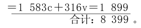
第Ⅰ部类的资本已经由6000增加到6500，即增加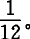第Ⅱ部类的资本已经由1715增加到1899，即增加近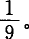
在这个基础上，第二年的再生产在年终得到的资本是：
Ⅰ.（5417c＋452m）c＋（1083v＋90m）v＝5869c＋1173v＝7042。
Ⅱ.（1583c＋42m＋90m）c＋（316v＋8m＋18m）v＝1715c＋342v＝2057
第三年结束时得到的产品是：
Ⅰ.5869c＋1173v＋1173m。
如果第Ⅰ部类和以前一样，把剩余价值的一半积累起来，那么，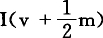＝1173v＋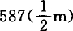＝1760，大于1715Ⅱc的总数，多了45。因此，这个差额必须通过同额的生产资料转给Ⅱc来抵消。这样，Ⅱc就会增加45，从而也要求Ⅱv增加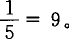其次，资本化的587Ⅰm，也是分为和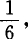即分为489c和98v；这98要求第Ⅱ部类的不变资本再增加98，这又要求第Ⅱ部类的可变资本再增加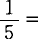20。因此，我们得出：
Ⅰ.（5869c＋489m）c＋（1173v＋98m）v＝6358c＋1271v＝7629
Ⅱ.（1715c＋45m+98m）c＋（342v＋9m＋20m）v＝1858c＋371v＝2229
总资本＝9858。
因此，三年的扩大再生产，使第Ⅰ部类的总资本由6000增加到7629，第Ⅱ部类的总资本由1715增加到2229，社会的总资本则由7715增加到9858。